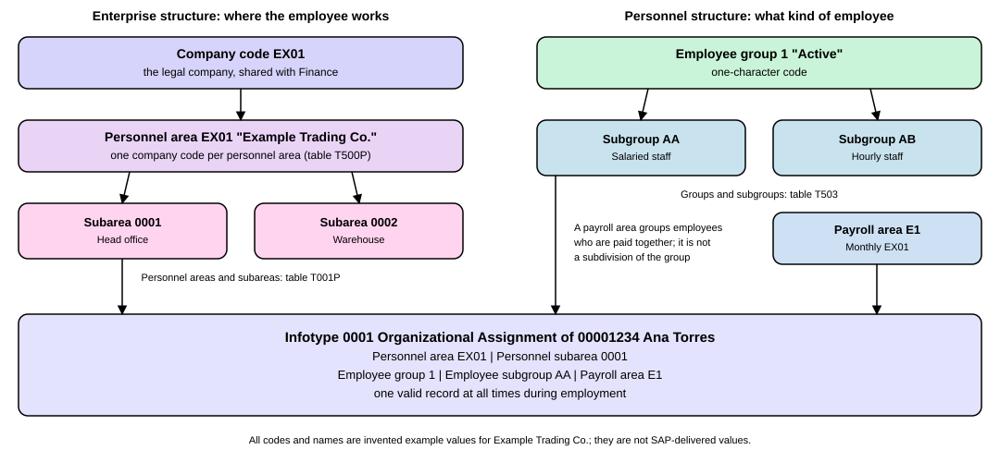

Enterprise and Personnel Structure
|
This content was generated with the assistance of AI and should be verified against the official documentation before being relied on in production. |
Before an SAP system can hire anyone or pay anyone, it has to know where each employee works and what kind of employee he or she is. SAP Human Resources answers the first question with the enterprise structure (the company code, the personnel area and the personnel subarea) and the second with the personnel structure (the employee group, the employee subgroup and the payroll area). Every employee is placed once in each, and almost everything that follows reads those values: which pay rules apply, which work schedules are allowed, which employees a payroll run includes and which data an administrator may see. This page explains each unit in plain words, shows how Example Trading Co. is set up, and says where the assignment is stored. It is written against SAP S/4HANA 2025 FPS02 on premise and Private Edition, where the HR functions come from SAP HCM for SAP S/4HANA (H4S4), a separately licensed component. SAP SuccessFactors has its own structures, covered by later pages.
Before you read
-
Organizational Structures: the company code, which the HR enterprise structure builds on.
-
Customizing and the Implementation Guide: the structures on this page are defined in Customizing, the configuration part of an SAP system.
Key terms
-
Enterprise structure: the structure of the company seen from personnel administration, time management and payroll: client, company code, personnel area and personnel subarea.
-
Personnel area: a unit that divides a company code into sub-units that differ in personnel administration, time management or payroll.
-
Personnel subarea: a subdivision of a personnel area, where most HR control data such as pay scales and work schedules is set.
-
Personnel structure: the grouping of employees by kind: employee group, employee subgroup and payroll area.
-
Employee group: the primary subdivision of the personnel, such as active employees or pensioners.
-
Employee subgroup: a subdivision of an employee group, such as salaried or hourly staff.
-
Payroll area: a group of employees for whom payroll is run together and at the same time.
-
Organizational key: a 14-character field, built from structure elements, that refines the organizational assignment and takes part in authorization checks.
-
Infotype: a record type of the HR master data, such as Organizational Assignment (0001).
The running example: Example Trading Co.
All HR pages on this site use one fictitious business, Example Trading Co. All keys, names and numbers below are invented example values chosen for this site. They are not values delivered by SAP, and a real system defines its own.
-
Company code
EX01, as on the Finance pages, currency EUR. -
Personnel area
EX01"Example Trading Co.", with personnel subareas0001"Head office" and0002"Warehouse". -
Employee group
1"Active", with employee subgroupsAA"Salaried staff" andAB"Hourly staff". -
Payroll area
E1"Monthly EX01": a monthly payroll period, from the first to the last day of the month. -
Three employees, each with a personnel number:
00001234Ana Torres, Sales Manager, hired 01.03.2024;00001235Ben Okoye, Sales Clerk, hired 01.09.2024;00001236Chloe Martin, Warehouse Clerk, hired 15.01.2025.
Dates are written DD.MM.YYYY, as an SAP screen shows them. Ana is the featured employee. The page extends the example only where it says so.
The two structures at a glance
SAP Help describes the enterprise structure as the structure of a company from the point of view of personnel administration, time management and payroll. The personnel structure is the other half: it does not say where the employee works, but what kind of employee he or she is and when he or she is paid. The two are independent. The figure shows both for Example Trading Co. and the record in which an employee’s values are stored.

The enterprise structure
Client
A client is a self-contained unit of a system, with its own master records and its own set of tables. In HR this has a practical consequence that SAP Help spells out: personnel data in other clients cannot be accessed, reporting across clients is not possible, and an employee who moves between two clients must be given a new personnel number. HR master records are client-specific. The general idea of a client is explained on the Organizational Structures page.
Company code
Within a client, SAP Help calls the company code the highest level of the enterprise structure in Personnel Administration. In Customizing it is a four-character alphanumeric code. It is the link to the other applications: if Controlling, Financial Accounting, Materials Management or Sales and Distribution run next to HR, the company code must satisfy their requirements too. In HR the company code has three jobs. It generates default values for data entry, for example an employee’s payroll area. It is a selection criterion for reports. And it is a unit of the authorization check. It also carries three defaults that matter for personal data: a default country key for the personal, address and bank data, a default currency key for the employee’s basic pay, and a language code for text output. That language code is not the logon language.
For Example Trading Co. the company code is EX01 with the currency EUR, so Ana’s basic pay of 4,000.00 EUR is entered in
the currency that the company code proposes.
Personnel area
A personnel area divides a company code into sub-units. It is defined in Customizing with a four-character alphanumeric code. SAP Help describes it as an organizational unit that represents an area of the enterprise that differs in personnel administration, time management or payroll aspects. It is used only in Personnel Administration and is unique within a client. Each personnel area is assigned to exactly one company code, to which the values relevant for Financial Accounting are attributed. HR regulations, whether statutory, from a collective agreement or internal, are defined at the level of personnel areas and personnel subareas. Like the company code, the personnel area generates default values (again, for example, the payroll area), is a selection criterion for reporting and is a unit of the authorization check.
SAP Help gives an example: the personnel area of a software company can be divided into the personnel subareas of
development, training and administration. Example Trading Co. is small, so it has one personnel area, EX01, in company
code EX01. Using the same key for both is a choice of this example; the two are different units that live in different
tables.
Personnel subarea
A personnel subarea is a subdivision of the personnel area, with a four-character alphanumeric code. It is where most of the control happens. SAP Help says the organizational control of the main HR subareas, namely pay scales, wage types and work schedule planning, takes place at the personnel subarea level. The personnel subarea:
-
specifies the country grouping, which controls the dialog for entering country-specific personnel data and the setup of wage types and pay scale groups in payroll (within a company code the country grouping must be unambiguous);
-
assigns a legal entity (the legal person for payroll), which tells the individual companies apart from a legal point of view;
-
specifies the groupings for Time Management, so that work schedules, substitution types, absence types and leave types can depend on the personnel subarea;
-
supplies defaults for the pay scale area and the pay scale type of an employee’s basic pay;
-
specifies the public holiday calendar; and
-
serves as a selection criterion for evaluations.
For a personnel subarea the system holds one pay scale area, one pay scale type and one public holiday calendar. The groupings that are linked to it decide which entries on the following screens are allowed for an employee of a given company code and personnel area, so they check the plausibility of what the administrator types.
Example Trading Co. uses two subareas: 0001 "Head office", where Ana and Ben work, and 0002 "Warehouse", where Chloe
works. Because the public holiday calendar and the work schedule choices hang on the subarea, the warehouse can have its
own shift schedules without touching the head office.
The personnel structure
Employee group
An employee group is the primary subdivision of the personnel. SAP Help says it defines the extent to which employees
place their labor at the disposal of the enterprise, and that Personnel Administration makes a significant distinction
between active employees, pensioners and early retirees. In Customizing it has a one-digit identification. Like the units
above, it generates default values (for example the payroll area or the basic pay), is a selection criterion for reporting
and is a unit of the authorization check. The standard system contains a few specimen employee groups, which you can copy
or adapt. Example Trading Co. uses one, 1 "Active". The code is an example value; whether 1 stands for active
employees in a real system is that system’s choice.
Employee subgroup
An employee subgroup subdivides an employee group. SAP Help gives the examples hourly wage earners, monthly wage earners, pay scale employees and non-pay scale employees for the active group. In Customizing it has a two-character alphanumeric code, and SAP Help states that all the control features of the personnel structure are defined at this level. They are the groupings that other parts of the system read:
| Grouping of the employee subgroup | What it controls |
|---|---|
Personnel calculation rule |
How payroll treats the employee, for example whether pay is calculated monthly or hourly. |
Primary wage types |
Which wage types are permitted for which employee subgroups. |
Collective agreement provision |
Which pay scale groups are open to which employee subgroups. |
Work schedule |
Which work schedules are permitted for which employee subgroups. |
Time quotas |
Which attendance and absence quota types are eligible for which employee subgroups. |
Appraisals |
Appraisal criteria that depend on the employee subgroup. |
The employee subgroup also supplies data entry defaults, is a selection criterion for evaluations and is a unit of the
authorization check. This is why Example Trading Co. needs two of them: AA "Salaried staff" for Ana and Ben, who are
paid a fixed monthly amount, and AB "Hourly staff" for Chloe, who is paid an hourly rate of 14.00 EUR. The grouping for
the personnel calculation rule is what lets payroll calculate the two differently. Which group number a subgroup gets for
each grouping is a Customizing decision of the implementation project.
Payroll area
A payroll area is, in the words of SAP Help for payroll, a group of employees for whom payroll should be run together and at the same time. Which payroll area an employee belongs to depends on the organizational assignment, and employees of different company codes can share one. In Personnel Administration Customizing it has a two-character alphanumeric code. When payroll runs, the payroll area decides two things: how many employees are included (the area is stored in infotype Organizational Assignment (0001)) and the exact payroll dates. The general period is stored as a period modifier of the area, such as monthly, semi-monthly, bi-weekly or weekly, the exact dates are stored for each valid payroll period, and a payroll control record connects the period still to be accounted to the one accounted last.
SAP recommends using as few payroll areas as possible. A separate one is needed when the periodicity differs (weekly for hourly staff, monthly for salaried staff), when the payroll period differs, when the payment date differs, when the retroactive accounting limit differs, or when payroll must not run for certain employees (an area without the Run payroll indicator). Every payroll area needs its own payroll control record. The period parameters and the date modifier of an area for which payroll has already run must not be changed: to pay an employee from a certain point in time with another periodicity or payment date, assign the employee to a different payroll area.
Example Trading Co. pays all three employees monthly, so one payroll area is enough: E1 "Monthly EX01". Its period for
March 2026, the month of Ana’s illustrative payslip, runs from 01.03.2026 to 31.03.2026, 31 days. Chloe is hourly staff,
but her pay is still accounted once a month, so she sits in E1 as well. The subgroup says how pay is calculated, the
payroll area says when. If the company paid hourly staff weekly, it would add a second payroll area for them, which this
example does not do.
SAP Help adds a rule that surprises newcomers: a payroll area can be changed only at the end of a period. Take a hypothetical case that is not part of the running example. If Ana’s status changed from salaried to hourly in the middle of March 2026 and the two statuses sat in different payroll areas with monthly payroll, the new payroll area could be entered only from 01.04.2026.
Organizational key
The organizational key refines the organizational assignment. It is a 14-character field that you can structure as you wish, with the help of control and rule tables, and the company code, personnel area and personnel subarea can make up part of it. It belongs to the authorization concept of Personnel Administration and Organizational Management, which gives flexibility when you extend the authorization check. SAP Help warns that it must not be confused with the organizational unit: they are not related. Example Trading Co. does not use a custom organizational key.
Key lengths at a glance
| Unit | Key | Example for Example Trading Co. |
|---|---|---|
Client |
3 characters |
One client holds all of the data. |
Company code |
4 characters |
|
Personnel area |
4 characters |
|
Personnel subarea |
4 characters |
|
Employee group |
1 character |
|
Employee subgroup |
2 characters |
|
Payroll area |
2 characters |
|
Organizational key |
14 characters |
Not used. |
Where an employee is assigned: infotype 0001 and the Hiring action
The structures above only describe the possibilities. The assignment of one employee is stored in infotype Organizational Assignment (0001). SAP Help says it holds the integration of the employee into the organizational structure and into the personnel structure, and that this information is paramount for the authorization behavior and for the control of payroll. It has the time constraint 1, which means that exactly one valid record has to exist at all times during the employment.
The page for the infotype adds how the values get there. The company code, personnel area and cost center are not ready for input in the infotype: they can be maintained only by carrying out a personnel action. The employee group and employee subgroup are taken from the infotype Actions (0000) (which SAP Help also titles Events) and cannot be overwritten, so they too change only through personnel actions. The payroll area is different: a default value is proposed and you can overwrite it. The Hiring action is the one that assigns a new employee to the enterprise structure.
For Ana, the hiring on 01.03.2024 produced a record like this one:
| Field | Value for 00001234 Ana Torres |
|---|---|
Personnel area |
|
Personnel subarea |
|
Employee group |
|
Employee subgroup |
|
Payroll area |
|
The table lists the fields that this page covers; the infotype has more, such as the cost center and the legal person. Showing it on screen requires an SAP system; not run here.
How the structures link to Organizational Management
Organizational Management describes the company as organizational units, jobs and positions. SAP Help distinguishes two set-ups. Without integration, there is no technical link between the Personnel Administration and Organizational Management tables, and the position, job and organizational unit are kept in Personnel Administration Customizing tables. With integration, they are set up in Organizational Management, and the position can be linked to the company code, personnel area, personnel subarea, cost center, controlling area, business area, employee group, employee subgroup, job and organizational unit. That link affects the personnel actions Hiring and Organizational reassignment: once a position is assigned, the personnel area, employee group and employee subgroup in infotype Actions (0000) can be filled automatically from it, and values typed by hand are validated against the position, with a warning if they disagree. The job and organizational unit are derived from the position.
For Example Trading Co., this means that the position 51000001 Sales Manager, if the company integrates the two
components, could carry personnel area EX01, subarea 0001, employee group 1 and employee subgroup AA, and
hiring Ana into it would propose those values. This extends the example by a setting that this site assumes, not by an
SAP-delivered rule. Organizational Management has a page of its own in this section.
The tables behind the structures
The values you define in Customizing are stored in tables. SAP Help for HR infotype programming names three of them: T500P
holds the personnel areas, T001P holds the personnel area and subarea combinations, and T503 holds the employee group and
subgroup combinations. The standard system uses them to check that the values typed into an infotype exist (a foreign key
check), through the standard classes CL_HR_T500P, CL_HR_T001P and CL_HR_T503, which follow the naming convention
CL_HR_<table name>. The same help text names the fields it passes: the personnel area and subarea (WERKS, BTRTL) of
the Organizational Assignment record, and its employee group and subgroup (PERSG, PERSK). The table of the payroll areas is not
named on the pages read for this page, so it is not listed here. Reading these tables from ABAP is covered by the HR ABAP
pages of this section.
What older books show, and what has changed
The book SAP ERP HCM: Technical Principles and Programming, 1st edition (2013), covers the same split. Its description of infotype 0000 groups the fields into an Enterprise Structure category (company code, personnel area, personnel subarea), a Personnel Structure category (employee group, employee subgroup, payroll area) and an Organizational Plan category, and it says that the personnel structure fields are not tied to the enterprise structure fields. That description is still accurate: the concepts and the assignments have not changed.
What has changed is the product around them. The book dates from before SAP S/4HANA. For the current release, SAP HCM for SAP S/4HANA (H4S4) needs a separate license, its business function is active by default from SAP S/4HANA 2025, and running HCM in compatibility mode is no longer possible there. SAP SuccessFactors has its own data model, covered by later pages. When you meet a screen or a transaction in the book, check it against the current documentation before relying on it.
Common mistakes
-
Confusing the personnel area with the company code. The company code is the unit of external accounting. The personnel area divides it for HR purposes, is used only in Personnel Administration and belongs to exactly one company code. Equal keys in an example do not make them one unit.
-
Looking for control data at the wrong level. Pay scale, wage type, work schedule and public holiday control sits on the personnel subarea, and the groupings of the personnel structure sit on the employee subgroup, not on the group.
-
Creating one payroll area per group of employees. SAP recommends as few payroll areas as possible; a new one is justified by a different periodicity, period, payment date or retroactive limit.
-
Trying to change the personnel area or employee subgroup in infotype 0001. These fields are not ready for input; they change through a personnel action.
-
Mixing up the organizational key and the organizational unit. They are not related.
-
Moving a payroll area in the middle of a period. A payroll area can only be changed at the end of a period.
Summary
-
The enterprise structure (client, company code, personnel area, personnel subarea) says where an employee works. The personnel structure (employee group, employee subgroup, payroll area) says what kind of employee he or she is and when he or she is paid.
-
A personnel area belongs to one company code and is divided into personnel subareas. Most HR control data, such as pay scales, wage types, work schedules and the public holiday calendar, is set at the subarea.
-
An employee group is divided into employee subgroups, and the subgroup carries the groupings that payroll, time management and pay scales read.
-
A payroll area is a group of employees paid together. Use as few as possible, and change an employee’s area only at the end of a period.
-
One employee’s values are stored in infotype Organizational Assignment (0001), which has to exist as one valid record during the whole employment and is changed by personnel actions such as Hiring.
-
With Organizational Management integrated, a position can carry the personnel area, group and subgroup, and Hiring proposes them. The tables T500P, T001P and T503 hold the Customizing values.
References
-
Elements of the Enterprise Structure (SAP Help, Human Resources)
-
The Personnel Structure from the Administrative Perspective (SAP Help, Human Resources)
-
The Personnel Structure From the Organizational Perspective (SAP Help, Human Resources)
-
Reading Customizing Tables with Existing Specialized Classes (SAP Help, Human Resources)
-
SAP ERP HCM: Technical Principles and Programming (SAP PRESS)